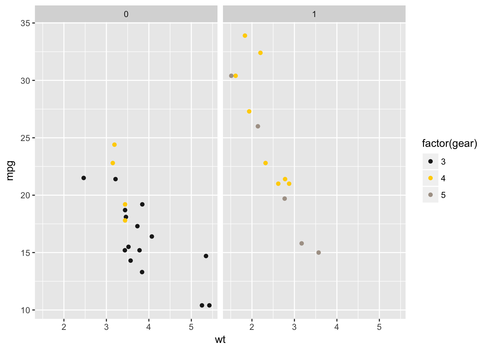
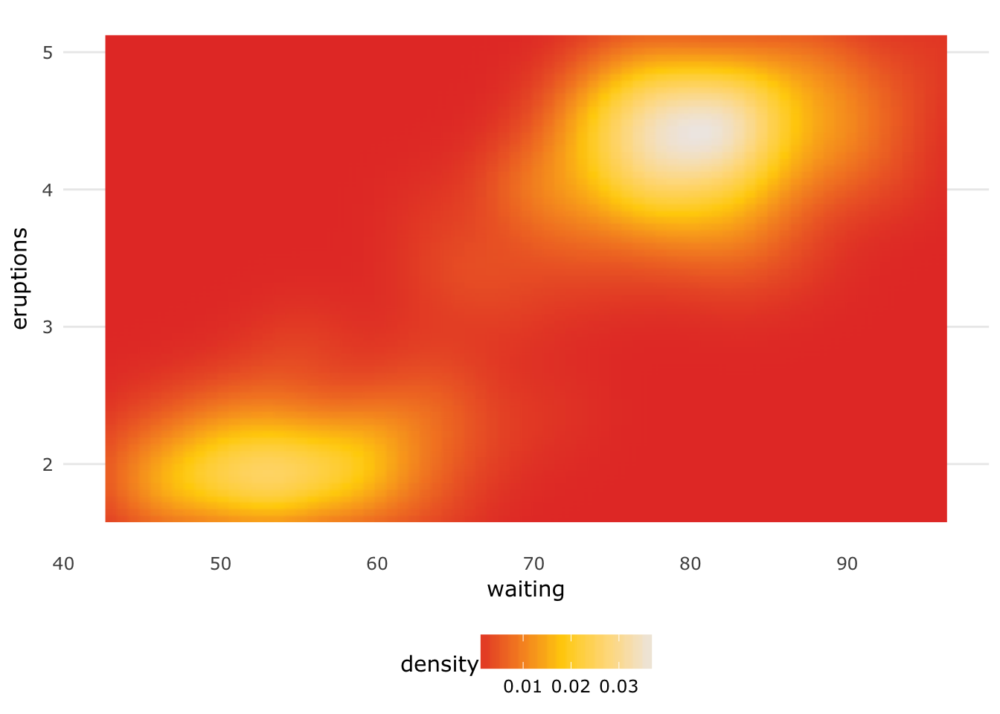
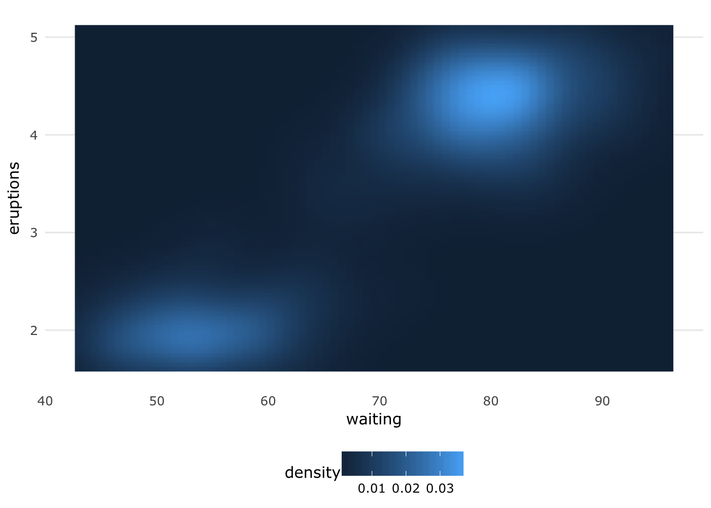

The goal of theme.usq is to provide University of Southern Queensland (USQ) staff and students a quick and easy way to apply USQ colours and typography to graphs created in R using ggplot2 while providing clear graphs for reports and presentations. All of the colours provided are defined in USQ’s Visual Identity Colour Palette, but do not all appear in the same order to maintain usability for the purposes of graphing.
This package has been tested on MacOS, Ubuntu Linux and USQ computers using Windows 7. For Linux users, if you have not installed the MS Core Fonts, you will need to do that for this package to function properly and generate the graphs with the proper typography. Windows and MacOS users should be ready to go with just the installation of this package.
Quickstart
The theme.usq package is only available from GitHub. The easiest way to install it is by using the devtools package.
The installation may take some time as some system fonts need to be catalogued to use the Microsoft Verdana font that USQ suggests. Once the installation is done, it should not be necessary to re-catalogue the fonts so loading theme.usq will not take any longer than expected.
if(!require(ggplot2)){
devtools::install.packages("ggplot2")
}
if(!require(devtools)){
install.packages("devtools")
library(devtools)
}
devtools::install_github("adamhsparks/theme_usq")Examples
Example 1: Scatterplots of discrete data
Using the usq.theme’s theme_usq for ggplot2, plot car weights by mpg and facet by Transmission (0 = automatic, 1 = manual) using the usq_palette in the scale_colour_manual discrete scale function to use USQ colours for the graph.
library("ggplot2")
library("theme.usq")
# Discrete values
p1 <- ggplot(mtcars) +
geom_point(aes(
x = wt,
y = mpg,
colour = factor(gear)
)) +
scale_colour_manual(values = usq_palette) +
facet_wrap(~ am)
p1
Now add the theme_usq() to the graph.
p1 + theme_usq()
Example 2: Heatmaps or other continuous data
Using the usq.theme’s theme_usq() for ggplot2, plot values using the usq_fill_gradient to use USQ colours for continuous values in the graph. Two types of gradients are included, warm and cool for both scale_fill_gradient() and scale_colour_gradient() as necessary.
Warm gradients
p2a <- ggplot(faithfuld, aes(waiting, eruptions)) +
geom_raster(aes(fill = density), interpolate = TRUE) +
usq_fill_gradient_warm() +
theme_usq()
p2a
Cool gradients
p2b <- ggplot(faithfuld, aes(waiting, eruptions)) +
geom_raster(aes(fill = density), interpolate = TRUE) +
usq_fill_gradient_cool() +
theme_usq()
p2bExample 3: Heatmaps using other colour palettes
theme_usq() can be used with any colour palette that you wish to use, while still applying the graph styling and typography to the graph.
Use the default ggplot2 colour scheme to fill the density plot while using the theme_usq() to theme the graph.
p3 <- ggplot(faithfuld, aes(waiting, eruptions)) +
geom_raster(aes(fill = density), interpolate = TRUE) +
theme_usq()
p3
Example 4: Histograms
Use a USQ colour to fill a histogram by using the second value in the usq_palette (USQ Charcoal) as the fill value, a good colour for presentations that are going to be projected on a screen.
p4 <- ggplot(diamonds, aes(carat)) +
geom_histogram(fill = usq_palette[1]) +
theme_usq()
p4
#> `stat_bin()` using `bins = 30`. Pick better value with `binwidth`.Example 5: Boxplots
Use the USQ colours to fill the boxplots, while using the first value in the usq_palette (USQ Charcoal) as the colour value.
p5 <- ggplot(mpg, aes(class, hwy)) +
geom_boxplot(aes(fill = drv), colour = usq_palette[1]) +
scale_fill_manual(values = usq_palette) +
theme_usq()
p5
Example 6: Timeseries
Plot timeseries lines using discrete colours for each variable of interest.
p6 <- ggplot(economics_long, aes(date, value01, colour = variable)) +
geom_line() +
scale_colour_manual(values = usq_palette) +
theme_usq()
p6
#> Warning in as.POSIXlt.POSIXct(x): unknown timezone 'default/Australia/
#> Brisbane'Code of Conduct
Please note that this project is released with a Contributor Code of Conduct. By participating in this project you agree to abide by its terms.